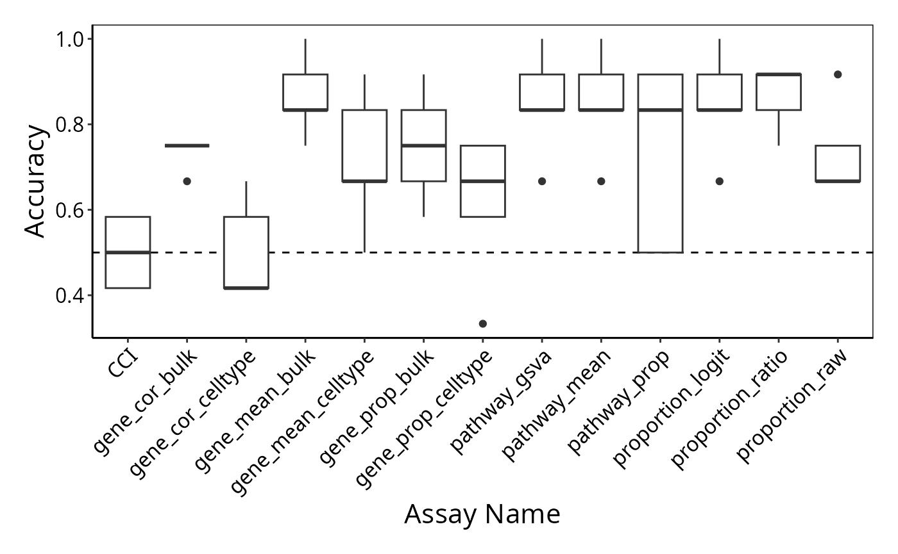

Disease outcome classification in Single Cell Patient Data Analysis
Yue Cao1 Andy Tran2
2022-10-17
disease_outcome_classification_schulte.RmdOverview
Description
As single-cell technology advances, the number of multi-condition multi-sample datasets increases. This workshop will discuss the challenges and analytical focus associated with disease outcome prediction using single cell data, which is one of the analytics involved in such datasets. The workshop’s overall learning goal is to investigate one possible approach to this task. We will also talk about general analytic strategies and the critical thinking questions that arise in the workflow.
Preparation and assumed knowledge
- Knowledge of R syntax
- Familiarity with the Seurat class
Learning objectives
- Explore various strategies for disease outcome prediction using
single cell data
- Understand the transformation from cell level features to patient
level features
- Generate patient representations from gene expression matrix
- Understand the characteristics of good classification models
- Perform disease outcome prediction using the feature representation and robust classification framework
1. Introduction
The rise of single-cell or near single-cell resolution omics technologies (e.g. spatial transcriptomics) has enabled the discovery of cell- and cell type specific knowledge and have transformed our understanding of biological systems. Because of the high-dimensionality and complexity, over 1000 tools have been developed to extract meaningful information from the high feature dimensions and uncover biological insights. For example, our previous workshop focuses on characterising the identity the state of cells and the relationship between cells along a trajectory.
While these tools enable characterisation of individual cells, there is a lack of tools that characterise individual samples as a whole based on their cellular properties and investigate how these cellular properties are driving disease outcomes. With the recent surge of multi-condition and multi-sample single-cell studies, the question becomes how do we represent cellular properties at the sample (e.g. individual patient) level for linking such information with the disease outcome and performing downstream analysis such as disease outcome prediction.
In this workshop, we will demonstrate our approach for generating a molecular representation for individual samples and using the representation for a downstream application of disease outcome classification.
2. Loading libraries and the data
2.1 Load libraries
First, load all the libraries we will be using in this workshop.
for (thispackage in c("ggplot2", "ggthemes" , "Seurat" , "dplyr" , "devtools",
"RCurl")){
if(! thispackage %in% installed.packages() ){
install.packages(thispackage )
}
}
library(ggplot2)
library(ggthemes)
theme_set(theme_bw())
library(Seurat)
library(dplyr)
library(devtools)
library(RCurl)
if (! "scFeatures" %in% installed.packages() ){
devtools::install_github("SydneyBioX/scFeatures")
}
library(scFeatures)
if (! "ClassifyR" %in% installed.packages() ){
if (!require("BiocManager", quietly = TRUE)){
install.packages("BiocManager")}
BiocManager::install("ClassifyR")
}
library(ClassifyR)
set.seed(2022)2.2 Loading the preprocessed data
We will use a single-cell RNA-sequencing (scRNA-seq) data of COVID-19 patients for this workshop. The dataset is taken from Schulte-Schrepping et al. 2020. We have subsampled 20 mild and 20 severe patient samples from this dataset. The original data can be accessed from the European Genome-phenome Archive (EGA) with the accession number EGAS00001004571.
download.file(url = "http://www.dropbox.com/s/vhnwch3362dlwr5/Schulte-schrepping_20_severe_20_mild.rds?raw=1" , destfile = "toy_data/Schulte-schrepping_20_severe_20_mild.rds" , method="auto" )
data <- readRDS("toy_data/Schulte-schrepping_20_severe_20_mild.rds")2.3 Visualising the data
We can visualise the data using dimensionality reduction approaches and colour the individual cells by the severity.
data <- NormalizeData( data)
data <- FindVariableFeatures(data )
data <- ScaleData(data, features = rownames(data) )
data <- RunPCA(data)
data <- FindNeighbors(data, dims = 1:10)
data <- FindClusters(data, resolution = 0.5)
#> Modularity Optimizer version 1.3.0 by Ludo Waltman and Nees Jan van Eck
#>
#> Number of nodes: 37210
#> Number of edges: 1210153
#>
#> Running Louvain algorithm...
#> Maximum modularity in 10 random starts: 0.9436
#> Number of communities: 26
#> Elapsed time: 7 seconds
data <- RunUMAP(data , dims = 1:10)
DimPlot(data, reduction = "umap", group.by = "meta_severity")
Interpretation:
Are the cells from mild/moderate and severe/critical patients easy or difficult to distinguish?
3. How can I characterise each individual as a whole from the matrix of genes x cells ?
In this workshop, we use scFeatures
to generate molecular representation for each patient. The molecular
representation is interpretable and hence facilitates downstream
analysis of the patient. Overall, scFeatures generates features across
six categories representing different molecular views of cellular
characteristics. These include:
- i) cell type proportions
- ii) cell type specific gene expressions
- iii) cell type specific pathway expressions
- iv) cell type specific cell-cell interaction (CCI) scores
- v) overall aggregated gene expressions
- vi) spatial metrics
The different types of features constructed enable a more comprehensive
multi-view understanding of each patient from a matrix of genes x
cells.
/Yue%20Cao%20Home%20Content/Github_push/scdneyDieasePrediction/articles/scFeatures_overview.png)
3.1 Checking the data
Inspect the number of cells in each patient sample, as well as the number of cells in each cell type.
Discussion:
Is there any sample or cell types you should remove from the data?
table(data$sample)
#>
#> BN-03_FrozenPBMC_03.04.2020-FrozenPBMC
#> 1000
#> BN-04_FreshEryLysis_23.04.2020-FreshEryLysis
#> 1000
#> BN-05_FreshEryLysis_23.04.2020-FreshEryLysis
#> 1000
#> BN-06_FreshEryLysis_23.04.2020-FreshEryLysis
#> 1000
#> BN-08_FreshEryLysis_29.05.2020-FreshEryLysis
#> 994
#> BN-11_FreshEryLysis_23.04.2020-FreshEryLysis
#> 1000
#> BN-12_FreshEryLysis_14.05.2020-FreshEryLysis
#> 1000
#> BN-12_FreshEryLysis_18.05.2020-FreshEryLysis
#> 410
#> BN-18_FreshEryLysis_12.05.2020-FreshEryLysis
#> 1000
#> BN-18_FreshEryLysis_14.05.2020-FreshEryLysis
#> 1000
#> BN-18_FreshEryLysis_18.05.2020-FreshEryLysis
#> 1000
#> BN-19_FreshEryLysis_12.05.2020-FreshEryLysis
#> 1000
#> BN-19_FreshEryLysis_14.05.2020-FreshEryLysis
#> 1000
#> C19-CB-0001_d11-Fresh
#> 970
#> C19-CB-0001_d16-Frozen
#> 273
#> C19-CB-0001_d7-Frozen
#> 1000
#> C19-CB-0002_d13-Fresh
#> 1000
#> C19-CB-0002_d8-Frozen
#> 1000
#> C19-CB-0003_d13-Fresh
#> 1000
#> C19-CB-0003_d18-Frozen
#> 1000
#> C19-CB-0005_d15-Frozen
#> 448
#> C19-CB-0005_d20-Frozen
#> 875
#> C19-CB-0008_d13-Fresh
#> 1000
#> C19-CB-0008_d20-Fresh
#> 1000
#> C19-CB-0009_d16-Fresh
#> 1000
#> C19-CB-0009_d9-Fresh
#> 938
#> C19-CB-0011_d13-Fresh
#> 932
#> C19-CB-0012_d16-Fresh
#> 1000
#> C19-CB-0012_d9-Fresh
#> 741
#> C19-CB-0013_d15-Fresh
#> 1000
#> C19-CB-0013_d8-Fresh
#> 629
#> C19-CB-0016_d16-Fresh
#> 1000
#> C19-CB-0020_d16-Fresh
#> 1000
#> C19-CB-0021_d18-Fresh
#> 1000
#> C19-CB-0052_d10-Frozen
#> 1000
#> C19-CB-0053_d3-Frozen
#> 1000
#> C19-CB-0198_d18-Fresh
#> 1000
#> C19-CB-0199_d8-Fresh
#> 1000
#> C19-CB-0204_d15-Fresh
#> 1000
#> C19-CB-0214_d7-Fresh
#> 1000
table(data$celltype)
#>
#> B CD14 Mono CD16 Mono CD4 T CD8 T DC
#> 1863 7241 919 7612 1763 260
#> DN gdT HSPC ILC intermediate MAIT
#> 52 264 43 1 645 328
#> MAST Neutrophil NK NKT Plasma Platelet
#> 60 9853 3518 1561 513 404
#> RBC unassigned
#> 2 308Discussion:
After running the process_data function, are there still
any patient samples or cell types that you should remove from the
data?
3.1 Creating molecular representations of patients
All the feature types can be generated in one line of code. This runs
the function using default settings for all parameters, for more
information, type ?scFeatures.
Given that this step may take up to 20 minutes, we have already
generated the result and saved it in the
intermediate_result folder. You could skip this step and
proceed to the next step for the purposes of this workshop.
# Here we label the samples using the severity, such as it is easier later on to retrieve the severity outcomes of the samples.
data$sample <- paste0(data$sample, "_cond_" , data$meta_severity)
scfeatures_result <- scFeatures(data, ncores = 8)
# setwd("intermediate_result/")
# saveRDS( scfeatures_result , "scfeatures_result_wilk_full.rds")3.2 Visualising and exploring scFeatures output
We have generated a total of 13 feature types and stored them in a
list. All generated feature types are stored in a matrix of samples by
features.
For example, the first list element contains the feature type
“proportion_raw”, which contains the cell type proportion features for
each patient sample. We could print out the first 5 columns and first 5
rows of the first element to see.
download.file(url = "https://www.dropbox.com/s/volcbtmcz4nlqw4/scfeatures_result_schulte.rds?raw=1" , destfile = "intermediate_result/scfeatures_result_schulte.rds" , method="auto" )
scfeatures_result <- readRDS("intermediate_result/scfeatures_result_schulte.rds")
# we have generated a total of 13 feature types
names(scfeatures_result)
#> [1] "proportion_raw" "proportion_logit" "proportion_ratio"
#> [4] "gene_mean_celltype" "gene_prop_celltype" "gene_cor_celltype"
#> [7] "pathway_gsva" "pathway_mean" "pathway_prop"
#> [10] "CCI" "gene_mean_aggregated" "gene_prop_aggregated"
#> [13] "gene_cor_aggregated"
# each row is a sample, each column is a feature
scfeatures_result[[1]][1:5, 1:5]
#> B CD14 Mono CD16 Mono
#> C19-CB-0001_d11-Fresh_cond_Mild/Moderate 0.2033024 0.4210526 0.02373581
#> C19-CB-0003_d13-Fresh_cond_Mild/Moderate 0.1524574 0.5687061 0.06218656
#> C19-CB-0002_d13-Fresh_cond_Mild/Moderate 0.2312312 0.2732733 0.03203203
#> C19-CB-0002_d8-Frozen_cond_Mild/Moderate 0.0670000 0.2780000 0.03000000
#> C19-CB-0001_d16-Frozen_cond_Mild/Moderate 0.2271062 0.3333333 0.04395604
#> CD4 T CD8 T
#> C19-CB-0001_d11-Fresh_cond_Mild/Moderate 0.12899897 0.02270382
#> C19-CB-0003_d13-Fresh_cond_Mild/Moderate 0.02407222 0.02407222
#> C19-CB-0002_d13-Fresh_cond_Mild/Moderate 0.06006006 0.05205205
#> C19-CB-0002_d8-Frozen_cond_Mild/Moderate 0.04600000 0.06200000
#> C19-CB-0001_d16-Frozen_cond_Mild/Moderate 0.11721612 0.02564103Once the features are generated, you may wish to visually explore the features. For example, with cell-cell communication, a heatmap summarising the number of interactions between cell types would provide more direct insight than a matrix of interaction scores.
To accommodate for this need, scFeatures contains a function
run_association_study_report that enables the user to
readily visualise and explore all generated features with one line of
code.
Note, because this function knits a rmd file, please open a new R script, paste the command in and run it there.
# specify a folder to store the html report. Here we store it in the current working directory.
output_folder <- getwd()
run_association_study_report(scfeatures_result, output_folder )3.3 Are the generated features sensible?
Discussion:
Using the HTML, we can look at some of the critical thinking questions that a researcher would ask about the generated features. These questions are exploratory and there is no right or wrong answer.
- Do the generated features look reasonable?
- Which cell type(s) would you like to focus on at your next stage of
analysis?
- Which feature type(s) would you like to focus on at your next stage
of analysis?
- Are the conditions in your data relatively easy or difficult to distinguish?
4. How can I perform disease outcome classification using the molecular representation of patients?
Now that we have generated the patient representation, in this section we will examine a useful case study of using the representation to perform disease outcome classification.
4.1 Building classification model
In this workshop we use the classifyR package to build a classification model. It provides an implementation of a typical framework for classification, including a function that performs repeated cross-validation with one line of code.
/Yue%20Cao%20Home%20Content/Github_push/scdneyDieasePrediction/articles/classifyR_overview.png)
We will build a classification model for each feature type.
# First clean the column names
for(i in 1:length(scfeatures_result)){
names(scfeatures_result[[i]]) <- gsub("\\s|[[:punct:]]", ".", names(scfeatures_result[[i]]))
}
# obtain the patient outcome, which is stored in the rownames of each matrix
outcome = scfeatures_result[[1]] %>% rownames %>% strsplit("_cond_") %>% sapply(function(x) x[2])Recall in the previous section that we have stored the 13 feature types matrix in a list. Instead of retrieving each matrix from the list, classifyR can directly take a list of matrices as an input and run repeated cross-validation model on each matrix individually.
classifyr_result = crossValidate(scfeatures_result,
outcome,
classifier = "DLDA",
nCores = 10 )
# because this can take a while, save for future use
# saveRDS("intermediate_result/classifyr_result.rds)4.2 Visualising the classification performance
To examine the classification model performance, we first need to specify a metric to calculate. Here, we calculate the balanced accuracy.
download.file(url = "https://www.dropbox.com/s/4018lih0qxrgg96/classifyr_result_DLDA.rds?raw=1" , destfile ="intermediate_result/classifyr_result_DLDA.rds" , method="auto" )
classifyr_result <- readRDS("intermediate_result/classifyr_result_DLDA.rds")
classifyr_result <- lapply(classifyr_result, function(x) calcCVperformance(x, performanceType = "Balanced Accuracy"))Format the output and visualise the accuracy using boxplots.
accuracy <- data.frame( lapply(classifyr_result, performance) )
colnames(accuracy ) <- unlist( lapply ( strsplit( names(classifyr_result) , "\\." ), `[` , 1))
accuracy <- reshape2::melt(accuracy)
accuracy_DLDA <- ggplot(accuracy, aes(x = variable, y = value)) + geom_boxplot() + theme(axis.text.x = element_text(angle = 45, vjust = 1, hjust=1)) + xlab("Feature types") + ylab("Balanced Accuracy - DLDA")+ ylim(0,1)
accuracy_DLDA
Interpretation:
Based on the classification performance, which feature type would you like to focus on at your next stage of analysis?
4.3 What features are important for disease outcome prediction?
In classifyR, the default settings perform 20 repeats of 5-fold cross-validation, giving rise to a total of 100 models. Therefore, to answer what features are important in the modelling, we first need to examine whether the rankings (or the importance) of each feature in each model are the same.
We use the feature type “gene_mean_celltype” as an example to illustrate. Here, we pick one of the cell type specific genes CREB3 and look at its ranks across the 100 models. (The smaller the rank, the better. Rank of 1 indicates that the feature is the most important for the model.)
gene_mean_celltype <- classifyr_result[["gene_mean_celltype.DLDA.t-test" ]]
Plasma_CREB3_rank <- lapply(1:100, function(x){
thismodel <- gene_mean_celltype@rankedFeatures[[x]]
thismodel$rank <- 1:nrow(thismodel)
thismodel["Plasma..CREB3", ]$rank
})
Plasma_CREB3_rank <- data.frame( rank = unlist(Plasma_CREB3_rank) )
ggplot(Plasma_CREB3_rank, aes( x = "model", y = rank)) + geom_boxplot() 
This feature type contains a total of 26076 features. Therefore, although the boxplot shows a certain variability in the ranks of the features, overall it is consistent that the expression of CREB3 in plasma cells has an important contribution towards the classification model.
This then leads to the next question, how should we determine the final set of top features to focus on?
Here, we use the mean scores across the folds to calculate the final set of top features.
top_features <- lapply(1:100, function(x){
thismodel <- gene_mean_celltype@rankedFeatures[[x]]
thismodel$rank <- 1:nrow(thismodel)
thismodel <- thismodel[sort(rownames(thismodel)), ]
thismodel$model <- x
thismodel
})
top_features <- as.data.frame( do.call(rbind, top_features ) )
top_features <- top_features %>% group_by(feature) %>% dplyr::summarise(rank = mean(rank)) %>% arrange(rank)
print(head(top_features,10))
#> # A tibble: 10 × 2
#> feature rank
#> <chr> <dbl>
#> 1 Neutrophil..CD63 5.88
#> 2 Neutrophil..S100A12 12.4
#> 3 Neutrophil..TSPO 12.7
#> 4 Neutrophil..S100P 13.3
#> 5 Neutrophil..MYL6 16.6
#> 6 CD4.T..LDHA 17.3
#> 7 CD4.T..GAPDH 20.8
#> 8 Neutrophil..TOMM7 21.4
#> 9 Neutrophil..CYBB 21.4
#> 10 Neutrophil..PRDX5 25.0Discussion:
Further explore the ranks of the features. Which cell type(s) would you like to focus on at your next stage of analysis ?
5. Is the constructed model robust for disease outcome classification?
In this section we take a detailed look at the model performance. In particular, a number of factors may affect the classification performance, such as the choice of classification algorithm.
5.1 Do the results change with different classification algorithms?
classifyR provides an implementation of a number of commonly used classification algorithms.
classifyr_result_svm = crossValidate(scfeatures_result,
outcome,
classifier = "SVM",
nCores = 20)Compare the accuracy obtained from the different algorithms.
format_accuracy <- function(result_list, performanceType = "Balanced Accuracy"){
result_list <- lapply(result_list, function(x) calcCVperformance(x, performanceType = performanceType ))
accuracy <- lapply(result_list, performance)
accuracy <- lapply(accuracy , `[`, performanceType)
accuracy <- data.frame( accuracy )
colnames(accuracy ) <- unlist( lapply ( strsplit( names(result_list) , "\\." ), `[` , 1))
accuracy <- reshape2::melt(accuracy)
return(accuracy)
}
download.file(url = "https://www.dropbox.com/s/43c72sqcxnwnjpi/classifyr_result_SVM.rds?raw=1" , destfile = "intermediate_result/classifyr_result_SVM.rds" , method="auto" )
classifyr_result_SVM <- readRDS("intermediate_result/classifyr_result_SVM.rds")
accuracy_SVM <- format_accuracy(classifyr_result_SVM )
accuracy_SVM <- ggplot(accuracy_SVM, aes(x = variable, y = value )) + geom_boxplot() + theme(axis.text.x = element_text(angle = 45, vjust = 1, hjust=1)) + xlab("Feature types") + ylab("Balanced Accuracy - SVM") + ylim(0,1)
accuracy_SVM
# ggplot(accuracy_SVM, aes(x = variable, y = value, colour = variable )) + geom_boxplot() + theme(axis.text.x = element_text(angle = 45, vjust = 1, hjust=1)) + xlab("Feature types") + ylab("Balanced Accuracy - SVM") + scale_colour_tableau("Tableau 20")+ ylim(0,1)
# ggsave("accuracy_on_schulte.pdf", width = 16, height = 10, units= "cm")5.2 Do the results change with different evaluation metrics?
Here we calculate accuracy instead of balanced accuracy. Inspect the difference in performance.
classifyr_result_accuracy <- lapply(classifyr_result_SVM, function(x) calcCVperformance(x, performanceType = "Accuracy" ))
accuracy_SVM_accuracy <- format_accuracy(classifyr_result_accuracy)
accuracy_SVM_accuracy <- ggplot(accuracy_SVM_accuracy , aes(x = variable, y = value)) + geom_boxplot() + theme(axis.text.x = element_text(angle = 45, vjust = 1, hjust=1)) + xlab("Feature types") + ylab("Balanced Accuracy - SVM Accuracy")+ ylim(0,1)
accuracy_SVM_accuracy 5.3 Is the model generalisable?
Generalisable means whether the model can have good performance when tested on an independent dataset.
Here, we use the model built on the Schulte-Schrepping dataset to test on the Wilk dataset. The Wilk data is obtained from Wilk et al. 2022. It contains 23 mild and 19 severe patients.
download.file(url = "https://www.dropbox.com/s/6ecpzf2qrnglayg/wilk_full.rds?raw=1" , destfile = "toy_data/wilk_full.rds" , method="auto" )
data <- readRDS("toy_data/wilk_full.rds")First visualise the data.
data <- NormalizeData( data)
data <- FindVariableFeatures(data )
data <- ScaleData(data, features = rownames(data) )
data <- RunPCA(data)
data <- FindNeighbors(data, dims = 1:10)
data <- FindClusters(data, resolution = 0.5)
#> Modularity Optimizer version 1.3.0 by Ludo Waltman and Nees Jan van Eck
#>
#> Number of nodes: 112589
#> Number of edges: 3319297
#>
#> Running Louvain algorithm...
#> Maximum modularity in 10 random starts: 0.9204
#> Number of communities: 19
#> Elapsed time: 88 seconds
data <- RunUMAP(data , dims = 1:10)
DimPlot(data, reduction = "umap", group.by = "meta_severity")
Here we have provided the constructed scFeatures result for the Wilk dataset.
scfeatures_result_schulte <- readRDS("intermediate_result/scfeatures_result_schulte.rds")
download.file(url = "https://www.dropbox.com/s/wihtyecqmouf22a/scfeatures_result_wilk_full.rds?raw=1" , destfile = "intermediate_result/scfeatures_result_wilk_full.rds" , method="auto" )
scfeatures_result_wilk <- readRDS("intermediate_result/scfeatures_result_wilk_full.rds" )
scfeatures_result_wilk <- scfeatures_result_wilk[ names(scfeatures_result_schulte )]
# in order to train and test two different datasets, need to make sure the features are the same
# pick the common features
new_list <- lapply( 1:length(scfeatures_result_schulte), function(i){
common_features <- intersect(colnames( scfeatures_result_schulte[[i]]) ,
colnames( scfeatures_result_wilk[[i]]))
new_schulte <- scfeatures_result_schulte[[i]][, common_features]
new_wilk <- scfeatures_result_wilk[[i]][, common_features]
list(new_schulte, new_wilk)
})
# format the features
new_scfeatures_result_schulte <- lapply(new_list, `[[`, 1)
new_scfeatures_result_wilk <- lapply(new_list, `[[`, 2)
names(new_scfeatures_result_schulte) <- names(scfeatures_result_schulte)
names(new_scfeatures_result_wilk) <- names(scfeatures_result_wilk)
# First clean the column names
for(i in 1:length(new_scfeatures_result_schulte)){
names(new_scfeatures_result_schulte[[i]]) <- gsub("\\s|[[:punct:]]", ".", names(new_scfeatures_result_schulte[[i]]))
}
# obtain the outcome, which is stored in the rownames of ech matrix
outcome_schulte = scfeatures_result_schulte[[1]] %>% rownames %>% strsplit("_cond_") %>% sapply(function(x) x[2])
outcome_wilk = scfeatures_result_wilk[[1]] %>% rownames %>% strsplit("_cond_") %>% sapply(function(x) x[2])
names(outcome_wilk) <- rownames(scfeatures_result_wilk[[1]])
# lapply(new_scfeatures_result_schulte, dim)
# lapply(new_scfeatures_result_wilk, dim)
# remove the feature types that have no common features
# new_scfeatures_result_schulte[[6]] <- NULL
# new_scfeatures_result_wilk[[6]] <- NULLFirst, we use the dataset from Schulte-Schrepping to perform self cross-validation. The purpose is to identify the best model (the best parameters). Once we decide on the best model, we then use this model to test on the Wilk dataset.
# perform self cross validation
classifyr_result_svm = crossValidate(new_scfeatures_result_schulte,
outcome_schulte,
classifier = "SVM",
nCores = 20)
# calculate balanced accuracy
classifyr_result_svm <- lapply(classifyr_result_svm, function(x) calcCVperformance(x, performanceType = "Balanced Accuracy" ))
# for each feature type, identify the best model and use the best model to predict on Wilk
result_generalisability <- NULL
for( i in c(1:length( classifyr_result_svm )) ){
bestmodel <- classifyr_result_svm[[i]]@finalModel[[1]]
tuneList <- list(cost = bestmodel$cost,
gamma = bestmodel$gamma,
degree = bestmodel$degree,
type = bestmodel$type,
tot.nSV= bestmodel$tot.nSV)
model <- train(x = new_scfeatures_result_schulte[[i]] ,outcomeTrain = outcome_schulte,
performanceType = "Balanced Accuracy", classifier = "SVM",
tuneParams = tuneList)
prediction <- predict( model , new_scfeatures_result_wilk[[i]])
truth <- outcome_wilk[names(prediction)]
temp <- calcExternalPerformance( factor(truth) , prediction,
performanceType = c("Balanced Accuracy" ))
temp <- data.frame(balanced_accuracy = temp,
featuretype = names(new_scfeatures_result_schulte)[[i]] )
result_generalisability <- rbind(result_generalisability, temp)
}
# saveRDS( result_generalisability, "intermediate_result/result_list_generalisability.rds")
Visualise the accuracy using boxplots.
download.file(url = "https://www.dropbox.com/s/9fmyvw9z1eh47ps/result_list_generalisability.rds?raw=1" , destfile = "intermediate_result/result_list_generalisability.rds" , method="auto" )
result_list_generalisability <- readRDS("intermediate_result/result_list_generalisability.rds")
result_list_generalisability$balanced_accuracy <- round( result_list_generalisability$balanced_accuracy, 2)
result_list_generalisability$featuretype <- factor( result_list_generalisability$featuretype , levels = c( result_list_generalisability$featuretype))
ggplot( result_list_generalisability, aes(x = featuretype , y = balanced_accuracy, fill = featuretype ) ) + geom_col()+ theme(axis.text.x = element_text(angle = 45, vjust = 1, hjust=1)) + ylim(0,1) + scale_fill_tableau(palette = "Tableau 20") +
geom_text(aes(label = balanced_accuracy), vjust = -0.5)
# ggsave("accuracy_on_wilk.pdf" , width = 16, height = 10, units = "cm")Discussion:
Examine the classification accuracy and comment on the generalisability of the model.
Final discussion:
How good do you think our model is? What parts of the workflow could you change to improve the results?